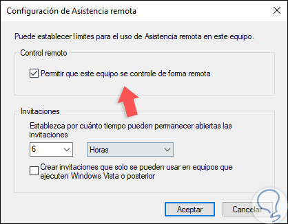

⠀
Esta Asistencia Remota de Windows es una herramienta similar a TeamViewer, basada en Escritorio Remoto, que nos permite pedir ayuda a un contacto mediante un fichero generado por ella misma llamado «Invitation. msrcincident» que, al abrirlo, se conecta directamente al equipo que nos ha solicitado la ayuda.⠀
⠀
Esta asistencia remota es considerado un software de administración remota ofrece la posibilidad de acceder y controlar, total o parcialmente, computadoras desde cualquier parte del mundo. Lo hace a través de Internet o una red local para ejecutar diferentes actividades deseadas entre un usuario y otro.